Born in Zarqa, Jordan, I spent the first decade of my life between Jordan and the West Bank.
At the age of 13, I moved to Madaba, Jordan to board at King's Academy, the first New England style boarding school in the Middle East.
I moved to Cambridge, MA for college at the age of 17, and have been living there since then.
I graduated from MIT in 2016 with a major in Computer Science and Engineering and a minor in Political Science.
I then joined the Media Lab's Learning Initiative where I worked on the Refugee Learning Accelerator, receiving my MEng in Computer Science and Engineering from MIT in 2017.
Currently, I'm a Senior Software Engineer at Oracle working on Cloud Commerce.
I'm a Software Engineer, a lifelong learner, and a public speaker. I'm passionate about entrepreneurship, social impact, and the practice of teaching.
Projects
A selection of projects that I've worked on and hackathon submissions.
Shabik - MIT Arab SciTech IDEAthon 2019
The winning pitch for the innovation tack at the MIT Arab SciTech IDEAthon, hosted on April of 2019.
Shabik is an entrepreneurial venture with the goal of collecting relevant data in Middle Eastern cities to power future technological innovation in the region.
Serious Game, developed at the Serious Games Lab in Grenoble, France, summer of 2017.
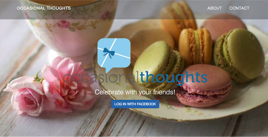
RevolVR - VR Game
Finalist and Best Entertainment submission at the Reality Virtuality Hack, 2016.
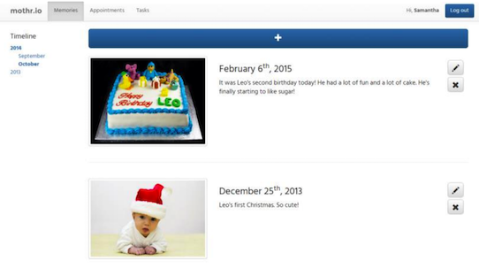
Syria Intellimap - NLP Project
A map of events in the Syrian Crisis generated from Twitter data.
Sphyria - VR Application
A virtual map of Syrian memory.
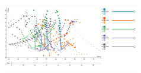
Multivariate Bio - Data Visualization
An attempt at visualizing multi-variate data.
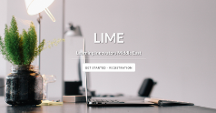
LIME - Research Project
Thesis Project at the MIT Media Lab.
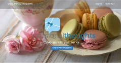
Occasional Thoughts - Web Application
A web service for sharing memories with friends.
Calengar - Web Application
A web service for managing calendar holidays at Vistaprint.
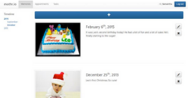
mother.io - Web Application
A web service for raising a child.
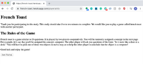
FrenchToast - Research Project
A real-time webservice for playing FrenchToast.
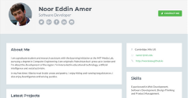
Personal Portfolio - Static Web Page
First static personal portfolio.
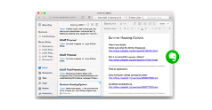
Evernote Rec Share - Technical Pitch
Technical Pitch that won 6.UAT's Microsoft Proposal Competition.
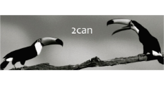
Whiteboard Canvas - Java Application
Final Project for 6.005, a collaborative whiteboard.
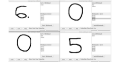
FastNET - System Design Project
Final Project for 6.033, a wireless network for MIT.
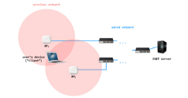
BITS - Phone System
Your personal behavioral interview training system.
Hotel Pricing Module
A google feature that I launched as an Product Manager.
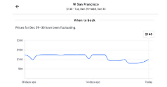
On the Wall
Creative Digital Essays.
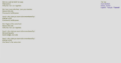
Strobe Lab Projects
Experiments with electronic flash and photography.
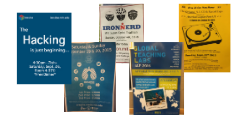
Grouppin
An NLP powered web app for postering.
Shabik - MIT Arab SciTech IDEAthon
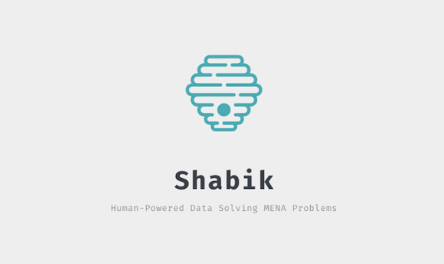
The winning pitch for the innovation tack at the MIT Arab SciTech IDEAthon, hosted on April of 2019.
Shabik is an entrepreneurial venture with the goal of collecting relevant data in Middle Eastern cities to power future technological innovation in the region.
Machine Learning models relay on large volumes of training data to achieve Artificial Intelligence.
Self-driving cars, being the primary example of the technology, relay on trillions of photographs of street signs and driving scenarios to achieve autonomy.
No contextual data produced from Middle Eastern cities is available for the expansion of such futuristic technologies into the Middle East.
Shabik leverages the gig economy and collaboration with community partners and media companies to collect and organize the Middle East's data.
Tayyar was my team's submission for MIT Hacking Arts, hosted on December of 2019, at the MIT Media Lab.
Tayyar is an endless collective poem, composed and recited by multiple artists in a distributed manner.
Users can submit a stanza of poetry and its recitation.
We then translate the stanza through the Google Translate API and add the submission to an ongoing, endless flow of poetry.
The running recitation can also be experienced in a VR simulation.
The first iOS application that I've created after learning iOS development with Swift and XCode,
through Stanford's Paul Hegarty's CS193P.
Poetshary provides a mobile experience for reading Arabic poetry and its translation, and a drag-and-drop approach to sharing your favorite verses with others.
Superwisor is a serious game that deals with academic supervision and highlights best practices.
Developed in the summer of 2017, at the Grenoble École de Management's Playground, superwisor is a virtual, role-playing game to enhance doctoral guidance.
RevolVR is a virtual reality game that showcases a locomotion mechanic for Vive in which the player can run in place to traverse the
virtual space. In this game, the player is running in place within a revolving wheel, while trying to collect gems and
shoot off falling meteors. All of this is happening while the entire space is collapsing into the center of an anomaly
in the middle of the wheel.
Syria Intellimap was my team's final project for the Advanced Natural Language Processing class at MIT.
We generated a map of Syria's conflict using information extracted from activist and journalist tweets.
We mined the tweets of 60 Twitter users over 5 years of conflict, extracting 3200 tweets.
We then annotated a subset of these tweets to train our NLP models.
We used an event classifier to classify the war events discussed in the tweet and Named Entity Recognition (NER) to extract locations and factions.
We then used that extracted data to generate a visual map with these events.
In the Fall of 2016, Community Jameel and Wamda hosted the MIT Media Lab Dubai Workshop, where I co-led the Learning for underserved communities track.
Through the workshop, I led a team of bright and motivated young leaders in the Middle East through the Design Thinking process.
We explored Virtual Reality technologies and visited the Zaatari Refugee Camp in Jordan to better understand learning challenges that young refugees faced.
The team created Sphyria at the culmination of the workshop.
Sphyria is a VR application that can be viewed with a smartphone using Google cardboard. It showcases a map of Syria on
top of which the user stands. On that map are multiple 360 photospheres. The user can click on any of these photospheres
and be able to view a 360 picture from Syria in 3D. Within that photosphere the user can hear recordings of memories
that other Syrians in the diaspora have recorded for that place as well as record their own.
In this project, I explored using D3Plus to visualize data with multiple dimensions.
In this particular example, I attempted to visualize biological data about gene expression in cells, generated from Professor Ed Boyden's Synthetic Neurobiology group at MIT.
The resulting visualization plotted 700 data points with 7 changing variables.
During my time at the Media Lab Learning Initiative, my PI, Philipp Schmidt and I developed a year-long capacity building
program intended for empowering innovators in the Middle East to build learning solutions for the refugee crisis. The program
consisted of an online learning portion, an in-person workshop, and a seed funding stage for the most successful start ups.
In 2016, I built LIME to support the online learning and community building stage.
In 2017, the Learning Initiative launched the Refugee Learning Accelerator based on this initial work.
Learning Innovators Middle East is a platform for online learning and community building.
Built with a React/Reducx/Node/PostgreSQL stack and integrations with gitlab, gitter, and online courses from udacity and edX,
LIME supported a project-based and community-focused approach to digital learning.
Tired of running after your friends to sign a birthday card? Can’t make it to a friend’s graduation but want to wish
them a wonderful life? Want an easy way to share your friends thoughts about an upcoming occasion? Use Occasional
Thoughts to get the thoughts of people you care about on an upcoming occasion in one place. Access your Occasional
Thoughts anytime and enjoy a stroll down memory lane!
Calenger is a standalone full-stack web service to help country managers at Vistaprint track calendar holiday dates. The
service is implemented with postgreSQL, express, node.js and React and deployed on AWS. It was designed and developed as
an internship project in the summer of 2016 to minimize the errors in the holiday dates entry process and streamline
the end-to-end process.
When raising a child, there are a lot of things to keep track of: weight, doctor appointments, special memories,...etc.
But there is no one platform to make organizing all of this easy. Parents need a better way of keeping track of all of
their children's lives, necessities and special moments and dividing tasks among themselves. Mother.io attempts to solve
this problem.
In the winter of 2016, I joined Professor Laura Schulz's Early Childhood Cognition Lab as an undergraduate research assistant, where I worked on French Toast.
French Toast is a two player cognitive game, where one player thinks
of an object and the other tries to guess the object by asking questions.
For this project, I built an instant-messaging web-service with socket.io for playing French Toast online. The web service was meant to test a Bayesian model
for playing the game with real participants on Mechanical Turk. As part of this research opportunity, I also ran cognitive experiments with children at
the Boston Children's Museum.
My first personal portfolio, created while I was at MIT.
It lists some of my projects and github activity.
Built statically and published on github pages.
My final presentation for 6.UAT, the Oral Communication requirement for Software Engineering.
The prompt involved proposing a technical feature for a note-taking application.
The presentation was one of three winners to the Microsoft sponsored Proposal Competition.
Recommended Share adds a feature to the note-taking app, Evernote, by using the Cyc knowledge base.
Cyc provides a knowledge base of "commonsense", that can deal with simple natural language and extract
relationships between sentences using predicate calculus techniques.
My final project for 6.005, MIT's core Software Engineering class.
For this project we followed a client-server architecture that supports network connections and handles concurrent edits.
We built a graphical user interface to run the application.
This whiteboard canvas allows multiple users to draw at the same time, across a network.
It supports a range of features including: drawing freehand with the mouse, drawing on top of screen captures or presentation slides,
or drawing with lines and shapes that can be moved around and resized.
My final project for 6.033, MIT's core Computer System Engineering class.
For this project we designed a wireless network that meets the need of an organization the size of MIT.
FastNet is a robust and scalable system that provides high performance and maximizes utilization.
The system consists of three core modules: the client, the access point and the server.
The design specifies these modules and the communication protocols between.
My final project for EID: Engineering, Innovation, and Design class.
For this project we designed a phone system to help college students prepare for behavioral interviews.
BITS lets you practice several different behavioral questions and is designed to support
a process of iteration and improvement over the same question. It then offers you the
opportunity to receive direct feedback from GECD, a resource for career development at MIT.
The Hotel Pricing Module was my internship project at Google, where I interned as an Associate Product Manager in the summer of 2015.
Motivated by the popularity of the pricing graphs feature Google Flights, I was tasked with investigating the introduction of a similar feature for hotels.
As an APM, I led a team of UX designers, UX researchers and engineers in the product discovery process.
We explored ideas for presenting pricing trends and comparison.
The feature is now live on Google search, when searching for a hotel.
One of four digital essays that I wrote for MIT's Science Writing and Media Class.
In this piece, a digital poem about the Palestinian Occupation is constructed by randomly shuffling lines written by activists on the Separation Wall.
The poem is built using Nick Monfort's digital poem The Two as a template.
Other projects include an audio essay of a typical day at MIT, a video essay based on Mahmoud Darwish's Think of Others,
and a board game that I designed based on Snakes and Ladders.
Strobe Lab is a class at the MIT Edgerton Center, where I learned the basics of electronic flash and photography.
Through theory and experimentation, I learned the basics of stroboscopy to capture slow-motion pictures of moving objects.
I ran five experiments and a final project, resulting in incredible images and experiences.
My team's submission for HackMIT 2015. Grouppin is an NLP powered web app that lets you walk through the infinite and snap
photos of the posters on the walls to create a time-sorted event catalog. Publish your own events on grouppin to save paper and time.
The simplicity of event creation will make Posters the most beautiful, accessible, and complete listing of events at MIT
A selection of trainings, presentations, and workshops that I've done.
Reach out to collaborate.
On Innovation - The Design Thinking Process
An overview of the Design Thinking Process through three workshops: Problem Definition, Brainstorming, and Prototyping.
The workshops were presented as part of the 2020 Virtual IDEAthon organized by the MIT Arab SciTech Team.
A workshop on how to Pitch, covering Delivery and Persuasion; Content and Storyboarding.
On Presenting
A workshop on telling a story and presenting great products.
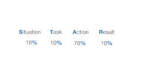
On Interviewing
Interview Coaching and Resume Reviews for technical positions.
On Learning
The 4 P's framework for Creative Learning: Projects, Passion, Peers and Play.
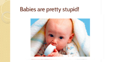
On Artificial Intelligence
What's Artificial Intelligence and how is it revolutionizing technology?
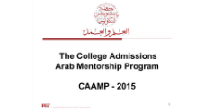
On College Admissions
Presentaions and panels on College Admissions in the US.
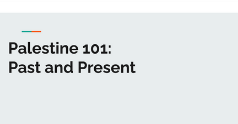
Palestine 101
An introduction to Palestinian history and current disposition.
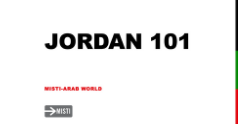
Jordan 101
An introduction to Jordanian history, culture and modern setting.
The Design Thinking Process
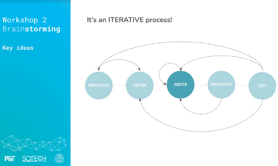
In April of 2020, I organized and hosted a Virtual IDEAthon with the MIT Arab SciTech Team, with the theme of ‘Learn From Home: Rethinking Learning During the COVID19 Crisis’.
Over the course of the half-day event, participants identified problem areas, ideated on them and presented their initial concepts to a jury.
Over 250 participants from 25 countries attended the virtual event, and a total of 42 teams pitched ideas.
We supported the top 10 finalists with mentorship and access to organizations that could provide funding.
During the first half of the event, we ran the attendees through the Design Thinking Process through three workshops: Problem Definition, Brainstorming, and Prototyping.
The event was streamed live and the workshops can be watched online.
The Interaction Design Foundation
defines Design Thinking as a design methodology that provides a solution-based approach to solving problems.
It’s extremely useful in tackling complex problems that are ill-defined or unknown, by understanding the human needs involved, by re-framing the problem
in human-centric ways, by creating many ideas in brainstorming sessions, and by adopting a hands-on approach in prototyping and testing.
In January of 2018, I helped run a week-long workshop for learning innovators in Amman, Jordan, as part of the Refugee Learning Accelerator.
During the event, I ran an interactive workshop on pitching.
The first portion of the workshop focused on Delivery, highlighting the use of gestures, speech and presence.
The second portion discussed Persuasion and how to make a persuasive pitch.
The third focused on Content, including the Hook, By-Statement, Problem and Solution, ending with a Storyboarding exercise.
A workshop on presenting great products. I ran this workshop several times including while teaching
in Italy as part of MIT's Global Teaching Labs
and in RLA.
The workshop builds on and adapts material from Blade Kottely's Engineering Innovation & Design Class.
The 10-Step Design Process can be followed as a model for building great products.
This presentation focuses on how to present such well-designed products, with a focus on telling a story, and delivering an experience.
Through countless interviews and interview preparation for technical positions at companies like Google and Amazon, I've gained a lot of practical experience on technical interviewing.
I have first-hand experience with interviewing for Software Engineering, Produce Management
and Developer Evangelist positions, but the skills I've gained are relevant for many technical positions.
Depending on the position that you're applying for and your timeline, there are specific things that you could be doing to prepare 6 months, 2 weeks, or 2 days before the interview.
Start with creating a solid resume and working on your online presence. Contact recruiters on LinkedIn and ask your network for referrals.
Most technical positions will have two types of interviews: behavioral interviews and technical interviews. There are concrete steps that you can take to prepare for both.
My understanding of Learning evolved after doing my Master's degree at the Media Lab's Learning Innitiative
and taking Mitchel Resnick's Learning Creative Learning Class.
Education is something that's done to you; learning is something that you do yourself.
The 4 P's Framework suggests that people learn best when working on Projects, based on their Passions, in collaboration with Peers, in a Playful spirit.
In January of 2015, I taught Artificial Intelligence for a month at a high school in Italy as part of
MIT's Global Teaching Labs.
Week one covered an overview of Artificial Intelligence; week two introduced graph theory and decision trees;
week three focused on the Minimaxing algorithm. Students worked on their own projects and gave a final presentation in week four.
I adapted the material given in week one into a workshop on Artificial Intelligence. The ideas presented in that overview
were influenced by Marvin Minsky's The Society of Mind.
In 2015, I participated in MIT's College Admissions Arab Mentorship Program, CAAMP.
CAAMP is an ongoing mentorship program for Arab students applying for colleges in the US. CAAMP gives an overview of Higher Education in the US,
the application process, college affordability and student life.
In July of 2020, I participated in a panel at the Education Without Borders conference on College in the US.
Through my involvement with Palestine@MIT, I've given an annual lecture on Palestine: Past and Present.
The lecture covers the history of the Palestinian struggle and highlights where things stand today.
It's inspired by my readings on Palestine, classes that I've took on the subject, and my lived experience as a Palestinian.
In 2014, I started discussions with the directors of MISTI at MIT to start a program in Jordan, a year later we sent MIT students to teach and do internships
in Jordan and have been doing so since. Every year since the inception of the program, I ran workshops with the students to introduce them to Jordanian
culture, history and current setting.
During my 2+ years as a Software Developer at Oracle, I have participated in the design, development, and maintenance of industry-grade software. Working on Oracle Commerce Cloud (OCC), I spent the first eight months of my career learning iOS development and contributing to the Assisted Selling Application. I later transitioned to working on a redesign of OCC's main product line: the Storefront.
Large retailers and telecom companies use Oracle Commerce Cloud to build and customize their e-commerce sites. Customers purchase OCC to access an out-of-the-box, hosted commerce site and contract third-party implementation partners who use OCC's headless commerce API, development tooling, and sample UI widgets to customize the Storefront. In addition to the hosted storefront and the commerce sdk, customers get access to an Admin platform (for managing catalogs, site settings, etc), an Agent platform for supporting customer service and call centers, and the Assisted Selling App to manage commerce flows in-store.
During my first eight months at Oracle, I learned iOS development with Swift and XCode, and worked on adding features to ASA, including tax treatment and store credit implementations. At the beginning of 2017, my team transitioned its focus from working on the iOS application to a global initiative of rearchitecting our main product line: the Oracle Cloud Commerce Storefront. It began with a prototype from a team in Belfast for a framework using React and Server-Side Rendering with the OCC APIs, and with that was born the Open Storefront Framework (OSF).
The Open Storefront Framework (OSF) has three goals in mind: improving performance, improving SEO (Search Engine Optimization), and improving the third-party implementation partner's development process. My team in Cambridge became in charge of Marcus' (the implementation partner) development experience and integrating OSF with the existing architecture.
To improve Marcus' development experience, we relied on yarn workspaces and created a command line interface to interact with the OCC endpoints, sync assets, and push Marcus' developed application to our servers. In addition, we had to design a new architecture for installing and serving Marcus' application in the Oracle Cloud.
In its existing architecture, OCC ran in two Java Virtual Machines, one serving the OCC Admin API and its UI and another serving OCC Storefront (both API and UI). Adding React and Server-Side Rendering required adding a Presentation node.js Server to the existing architecture that talked to the Storefront API and got its site settings from Admin. A coworker and I designed and fully implemented a dockerized application that we call the deployment controller.
The deployment controller manages the lifecycle of a deployed node.js OCC application. It exposes a REST API to talk to OCC Admin, receives Marcus' customized OCC applications, and builds and runs them in a green/blue deployment model to ensure continual availability. In a nutshell, I've designed and built the system to run the new OSF Storefront in the Oracle Cloud Infrastructure (OCI). The system that I've designed and built is currently running in OCI and serving customer storefronts. Through deploying the controller to OCI, I learned about Docker, Kubernetes, and other cloud technologies.
During those two years of developing the deployment controller and the logging solution for OSF, I grew accustomed to in-depth collaboration with a small team of four developers in Cambridge, as well as being the liaison for a global team distributed across three cities. I travelled to Belfast and Hyderabad to present our work in Cambridge and further that collaboration.
Given my natural affinity for presenting and public speaking, I became the go-to developer on the team to demo OSF internally and externally, including demoing the application in an early access session to implementation partners of OCC. I also worked with Oracle University and internal consultants on creating training for OCC developers. My work was recognized when I was promoted to Senior Software Engineer during my first two years at Oracle, an uncommon promotion at Oracle.